トップ › ほえほえチワ隊
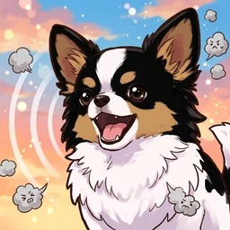
ほえほえチワ隊
チワワたちが吠えるかわいいサバイバー
ある朝、まちの空が「もやもや」でいっぱいになりました。
チワワのおはぎと仲間たちが「ワン！」と吠えてもやもやをおいはらいます。指で動かすだけで吠えるのは自動。レベルアップのたびにわざを選んで強くなり、5 分歩ききれば空が晴れます。
- 値段基本無料（アプリ内課金・ガチャあり）
- 機種iPhone・iPad（縦向き）
- 言語日本語・英語
- 年齢9+

とくちょう
- 1
吠えておいはらう
指でさわって動かすだけ。吠えるのは自動です。もやもやが晴れると残る「ほねっこ」を拾ってレベルアップ。
- 2
3 つから選ぶわざ
レベルアップのたびに 3 つのわざから 1 つ。吠える輪・フリスビー・しゃぼん玉・ふうせんなど 30 以上あり、Lv5 と Lv10 で姿が変わります。
- 3
みんなでワン！
おさんぽの途中で仲間の犬が加わります。声をそろえた「みんなで」の大わざも。
- 4
6 章 30 コース
こうえん・かわら・うみべなどを絵本のようなお話と一緒に。空が晴れるまでのりきる大きな「おおくもり」や、ハードモードもあります。
- 5
こわくないもやもや
もやもやは少しすねた顔のほこりや雲。犬は痛がらず、ぶつかっても少ししょんぼりするだけです。
- 6
そだてる・そうび
わざを育ててそうび 24 種類で強く。犬ごとのなかよしレベル、ミッション、まいにちボーナスも。
がめん
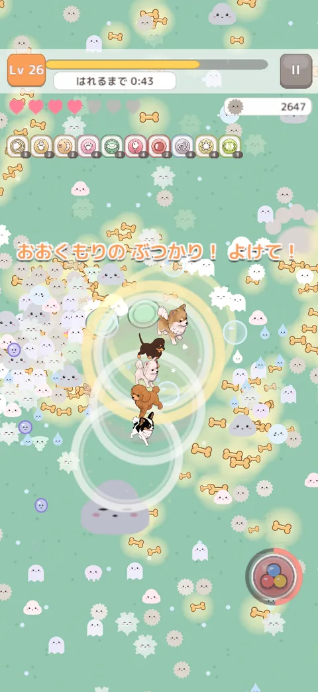
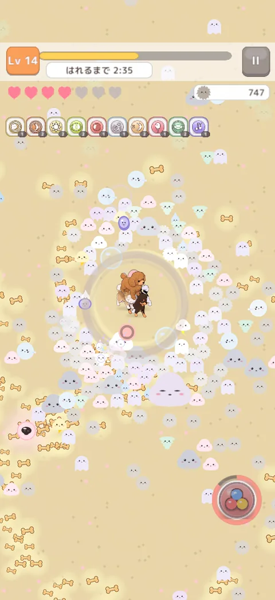
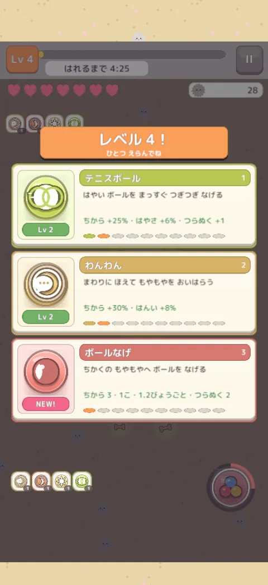
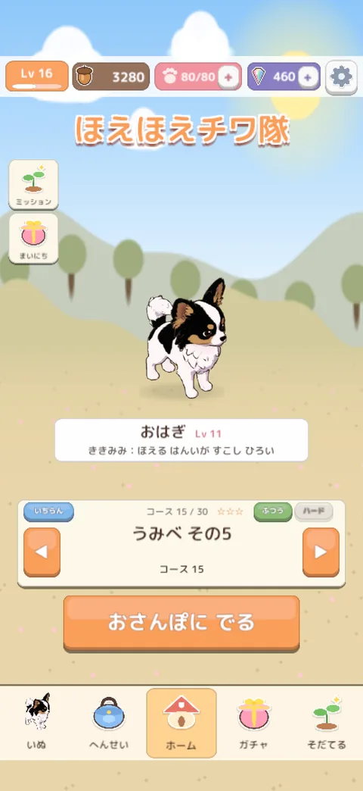
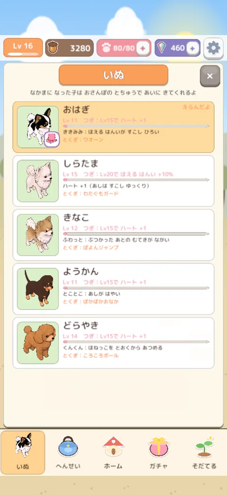
← 横にスクロールできます →
あそびかた
- 画面を指でさわって犬を動かします。吠えるのは自動です。
- もやもやが晴れると「ほねっこ」が残ります。拾うとレベルアップ。
- レベルアップのたびに 3 つのわざから 1 つ選んで強くなります。
- ハートがなくなる前に 5 分歩ききれば空が晴れてクリア！
登場する犬たち
おはぎ以外はコースを晴らすと仲間になります。犬ごとに「とくい」と専用のわざがあります。
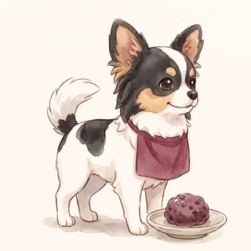
おはぎ
チワワ×パピヨン
ききみみ：吠える範囲が少し広い。
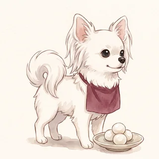
しらたま
チワワ×マルチーズ
ハートが 1 つ多い（足は少しゆっくり）。
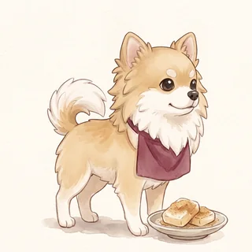
きなこ
チワワ×ポメラニアン
ふわっと：ぶつかったあとの守られる時間が長い。
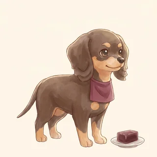
ようかん
チワワ×ダックスフンド
とことこ：足が速い。
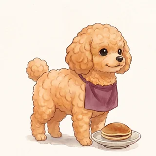
どらやき
チワワ×トイプードル
くんくん：ほねっこを遠くから集める。
よくある質問
無料で遊べますか？
はい。最後まで無料で遊べます。アプリ内課金とガチャがあります（くわしくは次の質問）。
ガチャと課金のしくみは？
そうびガチャとわざガチャは遊んでためる「どんぐり」で引けます。とくべつガチャは「にじいし」で引きます。にじいしは買えるほか、レベルアップ・ミッション・コースのクリアでももらえます（もらった分から先に使います）。
どのガチャも引く前に出る確率と「かならず出る回数」を見られます。とくべつガチャは 80 回引くと好きな星 5 と交換できます。全部そろえると特別なものが出るしくみ（コンプガチャ）とサブスクはありません。
子どもに遊ばせても大丈夫ですか？
年齢区分は 9+ です（ガチャがあるため）。はじめて買う前に年齢をおたずねし、20 歳未満の方には月ごとの上限があります。お子さんが使う端末では iPhone の「スクリーンタイム」で購入を制限できます。
広告はありますか？
動画広告は自分で「見る」を押したときだけです（おさんぽポイントを増やす・結果のどんぐり 2 ばい。1 日 5 回まで）。勝手に出る広告はありません。「どうがなしパス」を買うと動画を見ずにごほうびがもらえます。
記録はどこに残りますか？
端末の中に自動でセーブされます。アプリを消すと記録も消え、買ったにじいしも戻せません。どうがなしパスはショップの「かったものを もどす」で戻せます。
AI は使っていますか？
犬の絵は Meshy で作った 3D モデルから、絵本のページ・ガチャのバナー・アイコンは Google Gemini で作り、作者が選んで調整しました。プログラムと画面の文章は Claude Code を使って書き、作者が確認しています。遊んでいる間に AI が何かを作ることはありません。音楽（OpenTracks）と効果音（効果音ラボ・Kenney）は人が作った素材です。
プライバシーについて（かんたんな説明）
- 開発者は名前や連絡先などの個人情報を集めません。アカウント登録もありません。ゲームの記録は端末の中だけに保存されます。
- 動画広告の Google AdMob が端末の情報・おおまかな地域・端末ごとの識別子を集めることがあります。トラッキングの許可は求めないので、ほかのアプリをまたいだ追跡には使われません。
- 購入は App Store のしくみで行い、お支払いの情報は開発者に届きません。年齢の答えも端末の中だけに保存します。
あそんでみる
ほかの作品
-

チワちくRUN
ちくわを集めながら障害物をよけてゴールへ。犬たちが駆けぬける 3D ランゲーム。
無料・広告なし・課金なしiPhone・iPad／PC -

くっつきチワだんご
うたた寝する飼い主のひざの上で犬たちが寄りそってお昼寝する落ちものパズル。
買い切り・広告なし（ブラウザ版は無料）iPhone・iPad／PC のブラウザ -

あみあみチワおさんぽ
三つ編みみたいにからまった犬たちのリードを入れかわりと持ちかえでほどくパズル。
無料（広告あり・広告の削除あり）iPhone・iPad／PC のブラウザ -

じりじりチワまて
「待て」のあいだにじりじり前に出る犬たち。「よし！」の瞬間、ぬけがけしたのはだれ？
無料（広告あり・広告の削除あり）iPhone・iPad -

チワ判子課長
チワワのおはぎ課長が、しっぽの先にぶら下げた判子で書類に判を押す。審査はきびしいねこ課長。
無料・広告なしPC のブラウザ（unityroom）